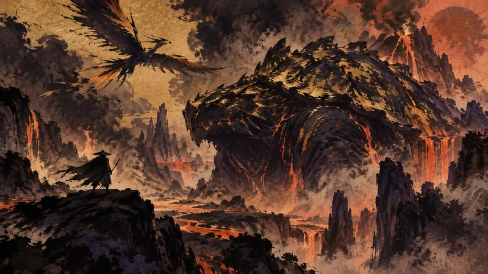
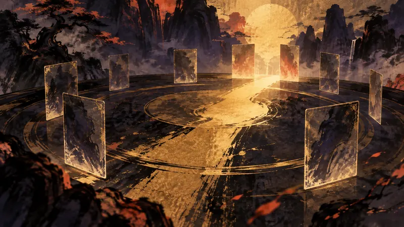
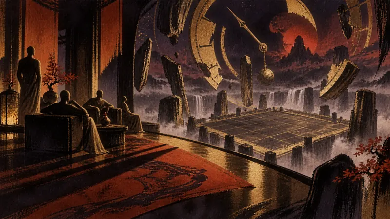
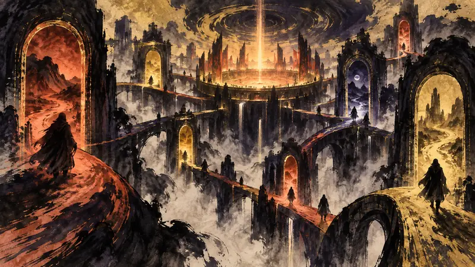
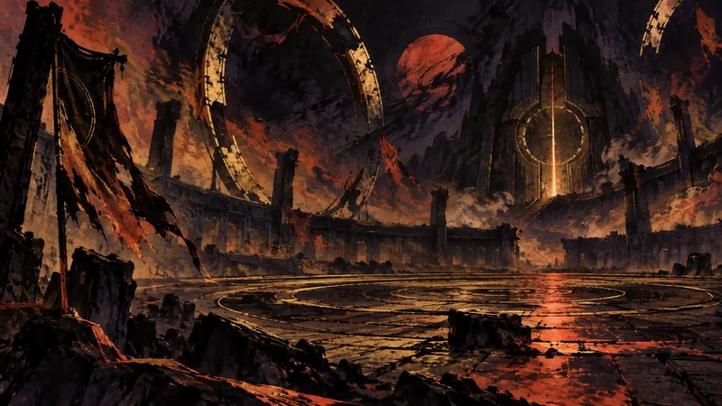
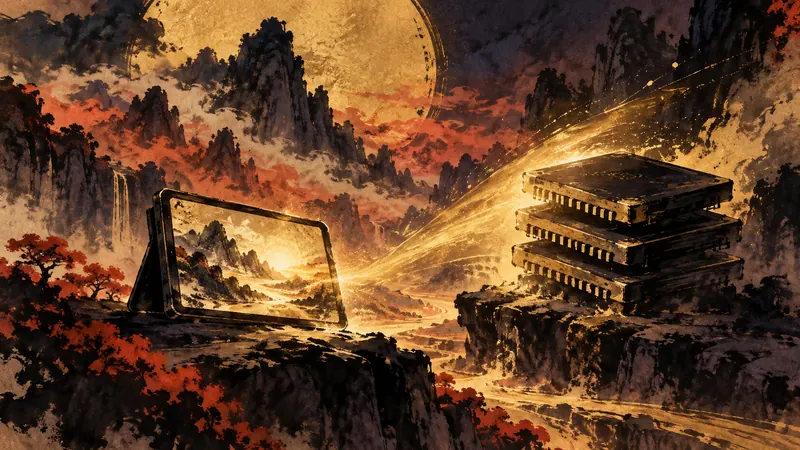
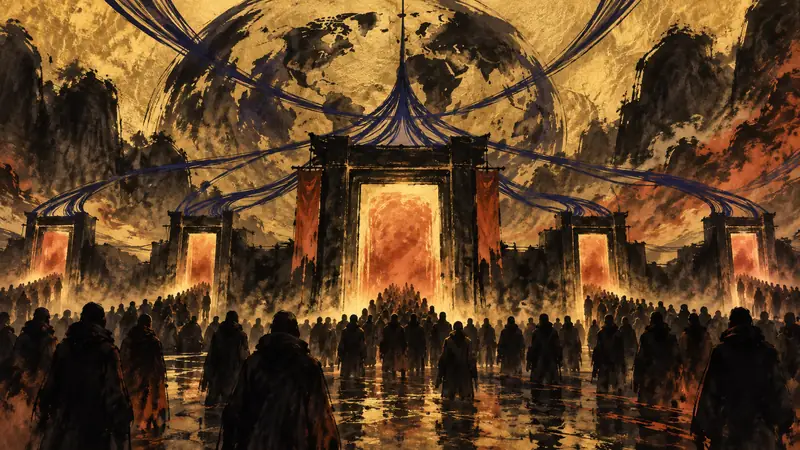
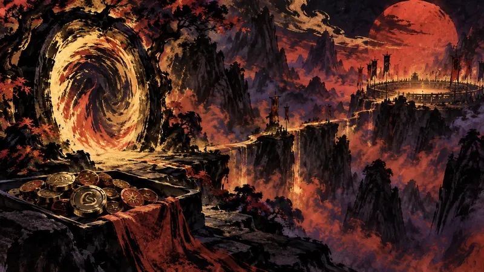

巴哈姆特 GNN ·

2027年発売予定の拡張コンテンツが、テオ・テスカトルと「噴衝鳥」を通じて、高難度のPS5試遊をTGS 2026の会場で披露する。
元記事を読む
巴哈姆特 GNN ·

発売日、対応プラットフォーム、「シリーズの楽しさをもう一度取り戻す」という目標がTGS 2026でまず交わり、長年のファンは、そのおなじみの感覚がどのようにゲームプレイへ落とし込まれるのかを知りたくなる。
元記事を読む
4Gamer.net ·

同じゲームの中で、時間を操る戦略バトルと「議員室」での交流が並置される。真の見どころは、2つのテンポが互いに十分な緊張感を引き出せるかどうかだ。
元記事を読む
GameLook 游戏大观 ·

『FAREIDOLIA』は登場するやいなや、クロスプラットフォームの二次元市場における競争の中に置かれ、3D新作の位置づけがまず焦点になった。
元記事を読む
GameLook 游戏大观 ·

8.8万人から約2,000人へ――プレイヤー規模の落差によって、Bungieは『Marathon』のアップデート方針を書き換えざるを得ず、PvEのスケジュールまで後ろ倒しになった。
元記事を読む
Jagat Play（印尼，印尼語） ·

RAMのコスト上昇は開発を乱していないが、Steam Deck 2がプレイヤーの手の届く価格で目立った性能向上を実現できるかどうかが、次のハードルになる。
元記事を読む
Gamelade（越南，越南語） ·

『GTA 6』本編は今年11月に先に登場する見込みだが、オンラインモードが来年まで待たされるなら、Rockstarはこの、さらに大きくなる可能性のある第二波の盛り上がりをどう組み立てるのだろうか？
元記事を読む
4Gamers Thailand（泰國，泰語） ·

批評家スコア97％で新作『バイオハザード』はまず高い位置につけたが、ゲームのキャラクターを登場させず、並行する新たな物語へ進んだこの作品を、プレイヤーは本当に支持するのだろうか？
元記事を読む
인벤 Inven（韓國，韓語） ·

能力値を直接振り直せ、レベル200のキャラクターも自由に転職できるようになったことで、『MapleStory M』の育成における試行錯誤のコストは、期間限定イベントとともに改めて書き換えられようとしている。
元記事を読む
Adrenaline Games（巴西，葡萄牙語） ·

《World of Warcraft: Forever》ベータ版にいち早く入ろうとするプレイヤーが増えるほど、待ち行列と接続切断が先にベータ版の熱気を利用可能性の試練へと変えてしまう。
元記事を読む
Press Start（澳洲，英語） ·

オーストラリアでは、MyMaccasの1,000リワードポイントで『World of Warcraft: Forever』ベータ版の先行アクセス権を交換でき、テストへの入口がマクドナルドのアプリにまで広がっている。
元記事を読む